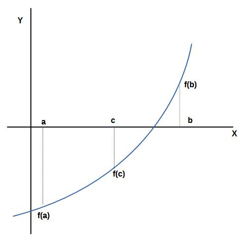

Bisection is one of the method to solving Nonlinear equation problem or to Finding root.
Bisection Formula :

\[c_i=\frac{a_i+b_i}{2}\]
for i=0,1,2,3,....,n
where :
- ci is center point(position of intersection).
- ai is left point.
- bi is right point.
Bisecton Method:
To approximate a root of the equation f(x)=0 in the interval [a,b].
Proceed with the method only if f(x) is continuous and f(a) and f(b) have opposite signs.
Input :
-f(x) as the function.
-[a,b] as the interval.
-delta as the tolerance.
Output :
-Root or c.
-Error or accuracy.
-Residual f(c).
Algorithm :
ya=feval(f,a);
yb=feval(f,b);
if (ya*yb) > 0 break,end
max1=1+round((log(b-a)-log(delta))/log(2));
for i=1 to max1
c=(a+b)/2
yc=feval(f,c);
if (yc=0)
a=c;
b=c;
else if (yb*yc)>0
b=c;
yb=yc;
else
a=c;
ya=yc;
end;
if (b-a) < delta break,end endfor
c=(a+b)/2;
err=abs(b-a);
yc=feval(f,c);
For demo, just click Run.
input :
Y = F(x)=
a =
b =
delta =
Graph :
domain x from: x1 = to
x2 =
Iteration :Here is an explanation of iteration :
In math, a curve can be extended as long as needed, and the function has a root when it crosses the x-axis. If, after extending the graph, it does not cross the x-axis, it means the function has no root.
At the starting point (iteration index 0), we have the value a=0, with f(a)=f(0)= -1(negative sign), b=2, with f(b)=f(2)=8.1859 (positive sign).
It means the graph crosses x-axis with f(a) below the x-axis and f(b) above the x-axis.
Then, we calculate c=(a+b)/2, so we got c=(0+2)/2=1.
The bisection method requires that values of f(a) and f(b) must have opposite signs.
Next to the iteration 1, let's see iteration 0, f(c)= -0.1585(negative sign). Because f(c) is negative, then we must choose the sign of f(a) or f(b) positive. In this case f(b) is positive.
So at iteration 1, value of b is remains unchanged, value of a = value of c (a=1, b=2).
For the next iteration, we do the same way, until we fullfil the condition where (b-a) < delta.
At the final iteration(iteration 50), the process completes, but in the algorithm we still calculate the value of c as root one last time. Finally we obtain root = c, accuracy = error and residual f(c).